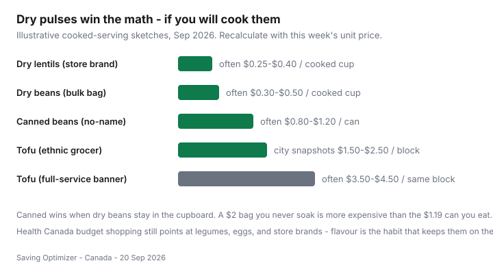

Food & Groceries · Canada
Cheap plant proteins in Canada: lentils, beans, and tofu that actually get eaten
Plant protein is cheap on a spreadsheet and abandoned on a Tuesday. Canadians buy a $2 bag of lentils, boil them once without salt, and go back to $16/kg chicken — then tell the internet that “beans don’t work.” The leak is flavour and prep, not the unit price.
This guide is Canadian sourcing: dry vs canned math, independent grocers for pulses and tofu, flavour systems that survive a No Frills week, and hybrid omnivore plates when the flyer bird is the other half of dinner. Health Canada’s budget-shopping pages already point at legumes and store brands. We add the till math. Cost per gram is in cheap high-protein meals.
Disclosure: There is no natural affiliate product in a lentil pot. Saving Optimizer does not claim grocer or spice-brand partnerships. If we later mention pantry tools or meal-kit contrasts, those are optional offer types. This workflow works with a pot you already own.
Key takeaways
- Dry lentils and beans usually win per cooked cup. Canned wins when you will actually open the can.
- Ethnic grocers often beat banners on 2–10 kg pulse bags and tofu blocks. Compare $/100 g.
- City snapshots (2026) often show tofu around $1.50–$2.50 at independent markets versus $3.50–$4.50 at full-service banners — labelled examples, not a national index.
- One flavour system, repeated, beats a new cuisine every week. Fat + acid + salt is the difference between dinner and compost.
- Hybrid weeks are allowed. Sale meat plus lentils is still a plant-protein strategy.
Dry vs canned cost math
Write it as cooked cups, not bag romance. A 900 g store-brand lentil bag at a discounter is often $2–$4 and yields many cups. A 540 ml no-name can is often $1–$1.50 and is dinner in eight minutes. Both can be rational.

Red lentils do not need a soak. That is why they beat chickpeas for households that will not plan 12 hours ahead. If you only cook beans when you remember the soak, keep two cans and one dry bag — not a cupboard of guilt.
Ethnic grocer bulk pulses
Independent South Asian, Middle Eastern, East Asian, and Caribbean grocers in Canadian cities routinely undercut national banners on 2 kg and 10 kg pulse bags, plus spices that make those bags edible. That is a split-cart move, not a new identity. PFC comparison threads mention this constantly; we treat it as a tactic, not a search-volume claim.
Buy the bag size you will finish in a few months. Pantry moths are a unit-price tax. How to shop those stores without wandering is in ethnic grocers.
Tofu price benchmarks by city
| Where | What to look at | Watch-outs |
|---|---|---|
| East / SE Asian grocer | House or local brands, 454 g and larger | Soft vs firm is a different dinner |
| Discounter (No Frills, FreshCo, Food Basics, Maxi) | Store-brand firm tofu when it exists | Still compare to the market two neighbourhoods over |
| Full-service banner | Usually a convenience tax | Organic stories do not add grams |
| Costco | Only if you finish a multi-pack | Expired tofu in a warehouse pack is not cheap |
Toronto, Vancouver, Calgary, and Montréal all have markets where the block is cheaper. We will not invent a city index. Take a photo of the unit price once and keep it in your price book next to eggs.
Flavour systems so households don’t quit
Pick one and run it for a month:
- Soy, garlic, chili, a pinch of sugar. Tofu and leftover chicken both take it.
- Cumin, tomato, onion. Lentils, chickpeas, or a can of beans on rice.
- Lemon, garlic, olive oil (or tahini if the jar’s unit price is real). Chickpeas and yogurt.
Salt the water. Add a fat. Serve with a carb you already own. That is Health Canada’s “healthy eating on a budget” in kitchen language: vegetables, protein foods, and whole grains — not a bland steamed pile.
Quit-proof rule: if nobody liked it, change the flavour system, not the entire protein strategy. Buying a $9 “high-protein” snack pack is not the lesson.
Mixing plant + sale meat hybrid weeks
A Canadian flyer week is allowed to be omnivore. Thighs on Sunday, lentil soup on Monday, tofu stir-fry on Tuesday, leftover shreds in fried rice on Wednesday. That pattern cuts the meat line without a manifesto. When chicken hits a stock-up price, cook the bird and keep the pulses as stretch — sale-chicken playbook.
Storage and batch cooking pulses
- Cook a pot of lentils or beans on the same Sunday you run the weekly grocery loop.
- Cool, then fridge three or four days of lunches. Freeze the rest in one-meal cups.
- Keep dry bags sealed. Label the freezer cups with the flavour system, not just “beans.”
- Cans: rinse if you want less sodium; still count the can as a win if it prevented takeout.
Food from stores was still +2.8% year over year in August 2026 (Statistics Canada Daily, 14 Sep 2026). Pulses are one of the few lines where the household still has a lot of control.
Sources & date stamps
- Health Canada, Healthy eating on a budget — meal planning and grocery shopping (canada.ca; used 20 Sep 2026).
- Statistics Canada Daily, 14 Sep 2026: food from stores +2.8% year over year in August 2026.
- Illustrative 2026 city tofu and pulse unit-price snapshots — verify locally; not a Statistics Canada series.
- Community pattern: r/PersonalFinanceCanada grocery-comparison threads noting independent markets on pulses and produce — directional, not a volume statistic.
Frequently asked questions
Are dry lentils cheaper than canned beans in Canada?
Usually, yes — store-brand dry lentils often land around $0.25–$0.40 per cooked cup versus $0.80–$1.20 for a no-name can. Canned still wins if the dry bag will sit for six months. Recalculate with this week’s unit price.
Where is tofu cheaper in Canadian cities?
Independent East and Southeast Asian grocers often beat national banners on the same 454 g block — city snapshots commonly show $1.50–$2.50 versus $3.50–$4.50 at a full-service store. Check $/100 g, not the story on the box.
How do I make plant proteins taste like dinner?
Pick one flavour system and repeat it: soy-garlic-chili, cumin-tomato, or tahini-lemon. Add a fat and a carb. Bland boiled lentils are why households quit, not the price.
Do I have to go fully vegetarian to save?
No. Hybrid weeks — sale chicken plus lentils, or tofu stir-fry beside a flyer pork night — cut the meat line without a new identity.
How should I store cooked pulses?
Cool, fridge a few days, or freeze in meal cups. Dry bags live in a sealed bin so pantry moths do not become the unit-price tax.